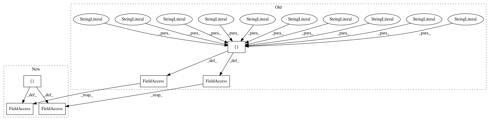

a00159cee56a3a8613292b1400c397207d8ae2db,pandastable/plotting.py,PlotViewer,plot2D,#PlotViewer#,172
Before Change
valid = {"line": ["alpha", "colormap", "grid", "legend", "linestyle",
"linewidth", "marker", "subplots", "rot", "logx", "logy",
"sharey", "use_index", "kind"],
"scatter": ["alpha", "grid", "linewidth", "marker", "s", "legend",
"colormap","logx", "logy", "use_index"],
"pie": ["colormap", "legend", "kind","subplots"],
"hexbin": ["alpha", "colormap", "grid", "linewidth"],
"bootstrap": ["grid"],
"bar": ["alpha", "colormap", "grid", "legend", "linewidth", "subplots",
"sharey", "stacked", "rot", "kind"],
"barh": ["alpha", "colormap", "grid", "legend", "linewidth", "subplots",
"stacked", "rot", "kind"],
"histogram": ["alpha", "linewidth","grid","stacked","subplots","colormap",
"sharey","rot","bins", "logx", "logy"],
"heatmap": ["colormap","rot"],
"area": ["alpha","colormap","grid","linewidth","legend","stacked",
"kind","rot","logx"],
"density": ["alpha", "colormap", "grid", "legend", "linestyle",
"linewidth", "marker", "subplots", "rot", "kind"],
"boxplot": ["alpha", "linewidth", "rot", "grid"],
"scatter_matrix":["alpha", "linewidth", "marker", "grid", "s"],
}
from pandas.tools import plotting
data = self.data
if self._checkNumeric(data) == False:
self.showWarning("no numeric data to plot")
return
kwds = self.mplopts.kwds
kind = kwds["kind"]
by = kwds["by"]
by2 = kwds["by2"]
//valid kwd args for this plot type
kwargs = dict((k, kwds[k]) for k in valid[kind])
self.fig.clear()
self.ax = ax = self.fig.add_subplot(111)
if by != "":
//groupby needs to be handled per group so we can add all the axes to
//our figure correctly
if by not in data.columns:
self.showWarning("the grouping column must be in selected data")
return
if by2 != "" and by2 in data.columns:
by = [by,by2]
g = data.groupby(by)
if len(g) >25:
self.showWarning("too many groups to plot")
return
self.ax.set_visible(False)
kwargs["subplots"] = False
size = len(g)
nrows = round(np.sqrt(size),0)
ncols = np.ceil(size/nrows)
i=1
for n,df in g:
ax = self.fig.add_subplot(nrows,ncols,i)
kwargs["legend"] = False //remove axis legends
d=df.drop(by,1) //remove grouping columns
self._doplot(d, ax, kind, False, kwargs)
ax.set_title(n)
handles, labels = ax.get_legend_handles_labels()
i+=1
self.fig.legend(handles, labels, "lower right")
self.fig.subplots_adjust(left=0.1, right=0.9, top=0.9, bottom=0.1, hspace=.25)
axs = self.fig.get_axes()
//self.canvas.draw()
else:
axs = self._doplot(data, ax, kind, kwds["subplots"], kwargs)
if type(axs) is np.ndarray:
self.ax = axs.flat[0]
elif type(axs) is list:
self.ax = axs[0]
self.fig.suptitle(kwds["title"])
if kwds["xlabel"] != "":
self.ax.set_xlabel(kwds["xlabel"])
After Change
valid = {"line": ["alpha", "colormap", "grid", "legend", "linestyle",
"linewidth", "marker", "subplots", "rot", "logx", "logy",
"sharey", "use_index", "kind"],
"scatter": ["alpha", "grid", "linewidth", "marker", "subplots", "s",
"legend", "colormap","sharey", "logx", "logy", "use_index"],
"pie": ["colormap", "legend", "kind","subplots"],
"hexbin": ["alpha", "colormap", "grid", "linewidth"],
"bootstrap": ["grid"],
"bar": ["alpha", "colormap", "grid", "legend", "linewidth", "subplots",
"sharey", "stacked", "rot", "kind"],
"barh": ["alpha", "colormap", "grid", "legend", "linewidth", "subplots",
"stacked", "rot", "kind"],
"histogram": ["alpha", "linewidth","grid","stacked","subplots","colormap",
"sharey","rot","bins", "logx", "logy"],
"heatmap": ["colormap","rot"],
"area": ["alpha","colormap","grid","linewidth","legend","stacked",
"kind","rot","logx"],
"density": ["alpha", "colormap", "grid", "legend", "linestyle",
"linewidth", "marker", "subplots", "rot", "kind"],
"boxplot": ["alpha", "linewidth", "rot", "grid"],
"scatter_matrix":["alpha", "linewidth", "marker", "grid", "s"],
}
from pandas.tools import plotting
data = self.data
if self._checkNumeric(data) == False:
self.showWarning("no numeric data to plot")
return
kwds = self.mplopts.kwds
kind = kwds["kind"]
by = kwds["by"]
by2 = kwds["by2"]
//valid kwd args for this plot type
kwargs = dict((k, kwds[k]) for k in valid[kind])
self.fig.clear()
self.ax = ax = self.fig.add_subplot(111)
if by != "":
//groupby needs to be handled per group so we can add all the axes to
//our figure correctly
if by not in data.columns:
self.showWarning("the grouping column must be in selected data")
return
if by2 != "" and by2 in data.columns:
by = [by,by2]
g = data.groupby(by)
if len(g) >25:
self.showWarning("too many groups to plot")
return
self.ax.set_visible(False)
kwargs["subplots"] = False
size = len(g)
nrows = round(np.sqrt(size),0)
ncols = np.ceil(size/nrows)
i=1
for n,df in g:
ax = self.fig.add_subplot(nrows,ncols,i)
kwargs["legend"] = False //remove axis legends
d=df.drop(by,1) //remove grouping columns
self._doplot(d, ax, kind, False, kwargs)
ax.set_title(n)
handles, labels = ax.get_legend_handles_labels()
i+=1
self.fig.legend(handles, labels, "lower right")
self.fig.subplots_adjust(left=0.1, right=0.9, top=0.9, bottom=0.1, hspace=.25)
axs = self.fig.get_axes()
//self.canvas.draw()
else:
axs = self._doplot(data, ax, kind, kwds["subplots"], kwargs)
if type(axs) is np.ndarray:
self.ax = axs.flat[0]
elif type(axs) is list:
self.ax = axs[0]
self.fig.suptitle(kwds["title"])
if kwds["xlabel"] != "":
self.ax.set_xlabel(kwds["xlabel"])
In pattern: SUPERPATTERN
Frequency: 8
Non-data size: 6
Instances
Project Name: dmnfarrell/pandastable
Commit Name: a00159cee56a3a8613292b1400c397207d8ae2db
Time: 2015-07-25
Author: farrell.damien@gmail.com
File Name: pandastable/plotting.py
Class Name: PlotViewer
Method Name: plot2D
Project Name: apache/incubator-tvm
Commit Name: 7a9346a019d1ea9e69c83d1abf89f68643c96b1a
Time: 2020-06-24
Author: tom.gall@linaro.org
File Name: docs/conf.py
Class Name:
Method Name:
Project Name: jsalt18-sentence-repl/jiant
Commit Name: 7bcf59fd2fe5ef057ff4817d3449c09e34c13341
Time: 2019-07-06
Author: bowman@nyu.edu
File Name: tests/test_write_preds.py
Class Name: TestWritePreds
Method Name: setUp
Project Name: sony/nnabla
Commit Name: a89899828a0cd44334b2c85760e016363f60826e
Time: 2020-07-20
Author: nnabla@example.com
File Name: python/setup.py
Class Name:
Method Name:
Project Name: kengz/SLM-Lab
Commit Name: a3ac629077189cc4115f567dd00e454c65c1a8de
Time: 2019-02-03
Author: kengzwl@gmail.com
File Name: slm_lab/experiment/monitor.py
Class Name: Body
Method Name: __init__
Project Name: facebookresearch/SentEval
Commit Name: 79b19e209e757e0aee29d0958aec53c4677e6a4c
Time: 2017-12-26
Author: aconneau@fb.com
File Name: examples/infersent.py
Class Name:
Method Name:
Project Name: dmnfarrell/pandastable
Commit Name: 05220d53e8e12f2c9a82c1dc6d7d7cbfee130d60
Time: 2015-09-13
Author: farrell.damien@gmail.com
File Name: pandastable/plotting.py
Class Name: PlotViewer
Method Name: plot2D
Project Name: cjhutto/vaderSentiment
Commit Name: c3c715ed1cd327a86579fe7631316df4fea7e441
Time: 2018-04-22
Author: cjhutto@gatech.edu
File Name: vaderSentiment/vaderSentiment.py
Class Name:
Method Name: